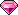
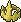
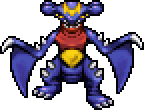
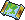

Bicicletas
Da Comum à Lendária: de +15% até +100% de velocidade, na hunt e andando pela praça de Cerulean. Tirou uma Lendária? O chat inteiro fica sabendo.
Um MMO de Pokémon que roda numa aba do navegador. Você abre o mapa, escolhe a hunt e ele faz o resto: anda até o selvagem, luta, derruba e o loot cai na sua bolsa. Você deixa a aba aberta e vai cuidar da sua vida.

O raro que cair pode virar dinheiro de verdade. Shiny, token de boss, Shiny Stone, Casa ou Bike Lendária: você anuncia pro outro jogador e saca a Gema em USDT na sua carteira.
Conta local, Google ou Discord. Leva menos de um minuto.
O beta acabou. Agora é pra valer.
O servidor oficial abriu no dia 7 de setembro, e o mundo não parou de crescer desde então: PvP Ranqueado com temporada, 18 ginásios disputados, bicicletas, casas com XP Share e o drop Lendário anunciado em dourado no chat pra todo mundo ver. Quem jogou o beta chegou com os seus shinys, P5, diamantes e gemas compradas. Quem chega agora começa junto, no servidor que fica.
Servidor oficial no arTudo aqui já está no ar e dá pra jogar hoje. As novidades de cada atualização ficam dentro do jogo, no botão !.
Da Comum à Lendária: de +15% até +100% de velocidade, na hunt e andando pela praça de Cerulean. Tirou uma Lendária? O chat inteiro fica sabendo.
A casa equipada reparte de 25% a 100% do XP da hunt com o pokémon que você registrar nela. A Lendária registra dois de uma vez.

Batalha 1×1 por fila, com equipe própria. Sete ranks, do Bronze ao Challenger, e temporada mensal com prêmio pro topo da tabela.

Um por tipo, e quem manda são os jogadores. Segure a coroa e leve o título e +25% de dano com pokémon daquele tipo na hunt.

Guild de até 6, guerra automática todo dia às 22h UTC. Ninguém precisa estar online, e o replay roda em até 8×.

Cada vitória pode render peça de TM Elemental ou AoE, que o Professor Carvalho troca por disco de golpe permanente.
Fragmentos que caem na Outland viram a pedra que evolui um pokémon shiny para a evolução shiny dele.
O primeiro torneio com dinheiro de verdade na mesa, em eliminação dupla. Está em desenvolvimento: o aviso sai no jogo e no Discord quando abrir.
Pokéidle é grátis pra jogar. Enquanto o seu pokémon caça, de vez em quando cai algo que a comunidade paga caro, como um shiny, um Bronze Boss Token, uma Shiny Stone, peça de TM ou até uma Casa ou Bicicleta Lendária. Você anuncia no Mercado da Comunidade cobrando em Gema, a moeda do jogo com lastro em USDT que você saca pela rede Solana.
Você caça normalmente, de graça. O que vale dinheiro de verdade costuma ser o que é difícil de achar: shiny, pedra, disco de TM, token de boss, fragmento de Outland ou uma Casa pronta. Aí você abre o Mercado da Comunidade, põe o achado na vitrine e escolhe se quer receber em Coins (a moeda de dentro do jogo) ou em Gema. Até diamante dá pra vender pra outro jogador.
Quem compra é outro jogador de verdade. Recebendo em Gema, você pede o saque a partir de 1.000 gemas e o valor cai na sua carteira em USDT. A comissão do mercado é de 10% em Coins e 15% em Gema, e o jogo avisa antes de publicar se o anúncio estiver em Coins, pra ninguém vender item de gema por trocado.
Você não precisa pôr um centavo pra começar. Dá pra criar a conta de graça, caçar de graça e vender o que achar. Comprar Gema é atalho de quem quer, nunca caminho obrigatório.
Negocie sempre dentro do jogo. Aqui tem escrow, trava de preço e caixa postal, então ninguém some com o seu item nem com o seu dinheiro. Acerto por fora é exatamente onde mora o golpe.
Uma coisa importante, pra ficar tudo claro: ninguém aqui promete quanto você vai ganhar nem quando vai cair um shiny. Depende do que o seu pokémon achar e do preço que outro jogador estiver disposto a pagar na hora. Isso é uma oportunidade de verdade dentro de um jogo. Não é salário, não é investimento, não é promessa de renda.
exemplos de anúncio

Pokémon entra na vitrine a partir do Nv 50 com nota 3,5. Shiny e P5 entram em qualquer nível.
Durante a luta você não clica em nada. Basta deixar a aba aberta e o jogo segue rodando enquanto você trabalha, estuda ou assiste série.
São 743 hunts no mapa-múndi, cada uma com nível, tipos e lista de drop próprios. O Hunt Analyser mostra quanto de XP e de Coins por hora aquela área rende na sua conta, antes de você ir.
O seu pokémon anda até o selvagem mais próximo e luta. Quando o bicho cai, o corpo fica 30 segundos no chão, que é a sua janela pra jogar a pokébola. O loot vai pra bolsa e as Coins entram na hora.
Evoluir, pôr no XP Share da sua casa, vender pro NPC ou anunciar pra outro jogador. Revive, poção e venda de loot ficam no automático enquanto você faz outra coisa.
Não é um jogo que promete conteúdo pro ano que vem. Isso aqui é o que está publicado e jogável hoje, de Kanto a Paldea.

Equipe de 5, Depot sem limite e uma Pokédex que guarda cada espécie que você tocou.

Batalha 1×1 automática, por fila, a partir do nível 80 e com equipe própria de até 5.
Clãs de até 6 pessoas, com brasão que você mesmo desenha: escudo, emblema e cores.
Cinco raridades de casa, sorteadas a partir de fragmentos que caem na Outland.
18 ginásios disputados entre jogadores e 25 bosses lendários com drops próprios.

Cada hunt pede um nível de treinador, então o mapa cresce junto com você.
O Centro Pokémon é a praça do jogo. Quem desmaia cai lá, e todo mundo se vê com o pokémon de batalha andando atrás. Digitou no chat, sai um balão em cima da cabeça. O jogo inteiro fala português, inglês e espanhol.
Tem gente da equipe no chat e no Discord todo dia, com a tag de cargo à vista pra você saber com quem está falando. Achou um bug, ficou com dúvida numa mecânica ou tem uma sugestão? Chega e fala.
A staff liga buff de XP e loot pro servidor inteiro, e alguns eventos já voltam sozinhos toda semana. Não é sorteio nem pacote pago: vale pra todo mundo que estiver online na hora.
O beta acabou em 7 de setembro e o servidor oficial está no ar. Sai atualização quase todo dia, e as novidades ficam no botão ! dentro do jogo.
Sem corte de trailer. É a tela do jogo, gravada direto: hunt, mapa-múndi, Pokédex, Market, Mercado da Comunidade, arena, ranking e bosses.
Conta local, Google ou Discord. Você escolhe o nick, escolhe o starter e pronto, já está dentro. Sem cartão, sem instalação, sem pegadinha.
 Jogar grátis
Jogar grátis